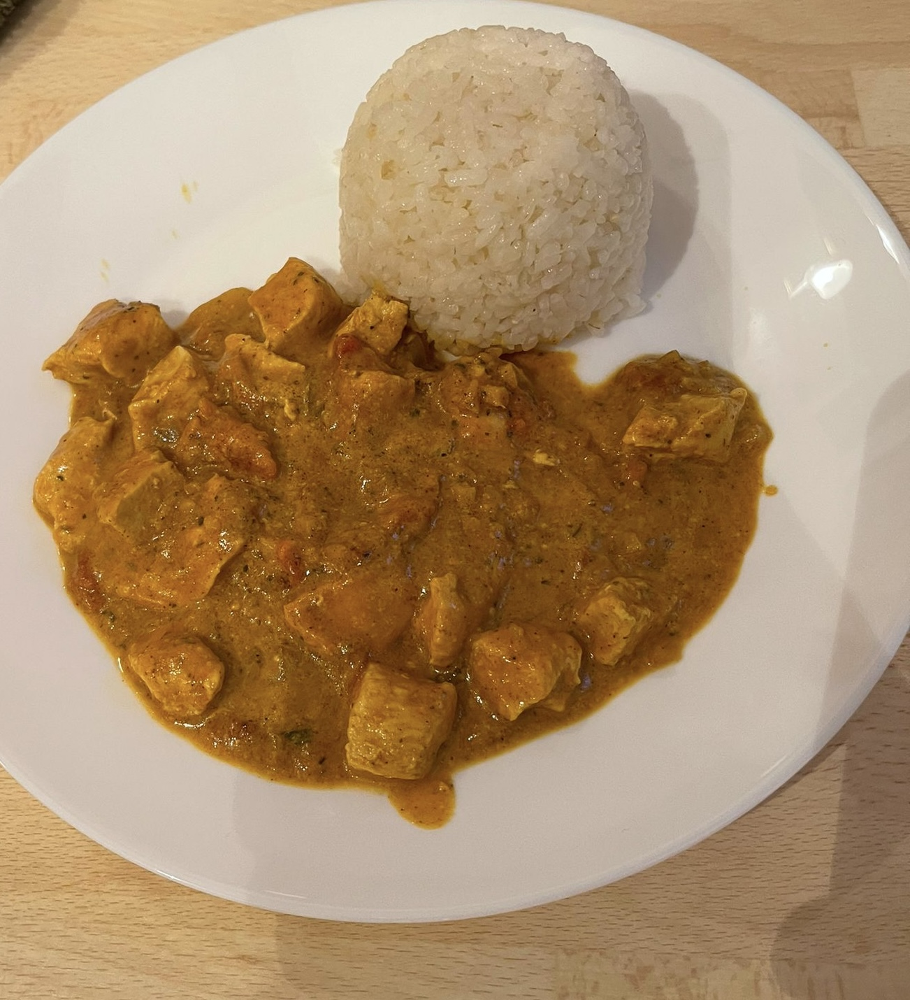

Chicken Curry

Description
A quick, easy and flavourful Chicken Curry Variation
Ingridients
- 500g Chicken Breast
- Olive Oil
- 1 cup Rice
- 1 big spoon Garam Masala
- 1 tablespoon Kurkuma
- 1 tablespoon Cayenne Pepper
- 1 tablespoon Salt
- 1 tablespoon ground Cilantro
- 1 tablespoon Ginger
- 1 Onion
- Fresh Garlic
- 200ml Coconut Milk
- 200ml Canned Tomatoes
- 100ml Water
Steps
- Slice the Chicken Breast in smaller pieces
- Cut the Onion, Garlic and Ginger into small pieces
- Wash and cook the Rice following its instructions
- Set a Pan on high heat with some Olive Oil
- Fry the Chicken from one side until it starts to turn crispy and brown/golden
- Put the Chicken in a separete Bowl for later use
- Fry the Onion, Garlic and Ginger
- Add Cilantro and Kurkuma and mix well
- Add Garam Masala and Cayenne Pepper and mix well
- Add Coconut Milk, canned Tomatoes and Water, mix and let it cook
- Add the Chicken, mix well and let it cook for 10-15 minutes on low heat
- Enjoy!